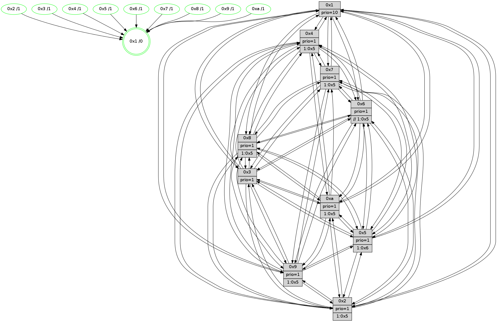

>> << IDX [start] -100 -25 -5 +0 +5 [1650.00668406]
 Previous packets
----------------------------------------------------------------------
1645.257918 beacon01(faad) #0 coord=01,02,03,04,05,06,07,0a,09,08 cycle=688.0ms assoc
-- color-indic=1 64 25 d0
1645.267901 beacon02(faad) #0 coord=01,02,03,04,05,06,07,0a,09,08 cycle=688.0ms assoc 64 b6 e1
1645.277901 beacon03(faad) #0 coord=01,02,03,04,05,06,07,0a,09,08 cycle=688.0ms assoc 64 cc ac
1645.287902 beacon04(faad) #0 coord=01,02,03,04,05,06,07,0a,09,08 cycle=688.0ms assoc 64 bb 46
1645.297902 beacon05(faad) #0 coord=01,02,03,04,05,06,07,0a,09,08 cycle=688.0ms assoc 64 c1 0b
1645.307902 beacon06(faad) #0 coord=01,02,03,04,05,06,07,0a,09,08 cycle=688.0ms assoc 64 4f dc
1645.317901 beacon07(faad) #0 coord=01,02,03,04,05,06,07,0a,09,08 cycle=688.0ms assoc 64 35 91
1645.327907 beacon0a(faad) #0 coord=01,02,03,04,05,06,07,0a,09,08 cycle=688.0ms assoc 64 44 9a
1645.347906 beacon08(faad) #0 coord=01,02,03,04,05,06,07,0a,09,08 cycle=688.0ms assoc 64 b0 00
1645.360649 [Hello(8): seq=992 sym=5,2,3,7,9,6,4,10,1 sysInfo=hasWarning stat=5:11,11,13,4/2:15,2,6,0/3:0,12,13,7/7:7,1,13,2/9:2,11,1,10/6:10,9,9,5/4:5,13,5,3/10:11,10,6,8/1:7,4,2,0]
1645.363375 [Hello(10): seq=981 sym=6,2,3,8,7,5,9,4,1 sysInfo=hasWarning stat=6:11,14,7,10/2:1,2,11,4/3:10,6,5,2/8:3,1,13,8/7:15,6,6,2/5:6,4,12,5/9:10,2,5,1/4:1,2,0,0/1:5,10,13,1]
1645.366065 [Hello(7): seq=1048 sym=2,3,5,6,8,1 sysInfo=hasWarning stat=2:5,11,7,8/3:9,2,15,9/5:8,1,3,7/6:4,4,6,2/8:13,7,12,3/1:7,2,12,0]
1645.368624 [Hello(4): seq=1048 sym=5,8,6,2,3,9,7,10,1 sysInfo=hasWarning stat=5:8,7,5,6/8:0,4,12,1/6:15,14,2,7/2:0,2,10,5/3:4,4,4,3/9:6,0,6,7/7:0,12,11,3/10:3,14,13,1/1:9,10,13,1]
1645.371898 [STC(9)->1 #0.302 new-neigh,tree-change,inconsistent-stability,stable,to-color d=1]
1645.374781 [STC(4)->1 #0.302 new-neigh,tree-change,inconsistent-stability,stable,to-color d=1]
1645.376464 [STC(7)->1 #0.302 new-neigh,tree-change,inconsistent-stability,stable,to-color d=1]
1645.378399 [STC(8)->1 #0.302 new-neigh,tree-change,inconsistent-stability,stable,to-color d=1]
1645.380230 [STC(5)->1 #0.302 new-neigh,tree-change,inconsistent-stability,stable,to-color d=1]
1645.382763 [Color(9) seq=574 @0:0 prio=1 >1.@5,1.@a]
1645.384232 [Color(5) seq=555 @0:0 prio=1 >1.@4,1.@6,1.@7,1.@8]
1645.388024 [Color(4) seq=565 @0:0 prio=1 >1.@5,1.@9,1.@a]
1645.390627 [STC(10)->1 #0.302 new-neigh,tree-change,inconsistent-stability,stable,to-color d=1]
1645.393848 [Color(10) seq=625 @0:0 prio=1 >1.@5,1.@9]
1645.397067 [Color(7) seq=555 @0:0 prio=1 >1.@5,1.@9,1.@a]
----------------------------------------------------------------------
1646.046049 beacon01(faad) #0 coord=01,02,03,04,05,06,07,0a,09,08 cycle=688.0ms assoc
-- color-indic=1 64 e1 de
1646.056032 beacon02(faad) #0 coord=01,02,03,04,05,06,07,0a,09,08 cycle=688.0ms assoc 64 72 ef
1646.066031 beacon03(faad) #0 coord=01,02,03,04,05,06,07,0a,09,08 cycle=688.0ms assoc 64 08 a2
1646.076032 beacon04(faad) #0 coord=01,02,03,04,05,06,07,0a,09,08 cycle=688.0ms assoc 64 7f 48
1646.086031 beacon05(faad) #0 coord=01,02,03,04,05,06,07,0a,09,08 cycle=688.0ms assoc 64 05 05
1646.096033 beacon06(faad) #0 coord=01,02,03,04,05,06,07,0a,09,08 cycle=688.0ms assoc 64 8b d2
1646.106034 beacon07(faad) #0 coord=01,02,03,04,05,06,07,0a,09,08 cycle=688.0ms assoc 64 f1 9f
1646.116037 beacon0a(faad) #0 coord=01,02,03,04,05,06,07,0a,09,08 cycle=688.0ms assoc 64 80 94
1646.136038 beacon08(faad) #0 coord=01,02,03,04,05,06,07,0a,09,08 cycle=688.0ms assoc 64 74 0e
1646.148218 [Hello(5): seq=1049 sym=7,6,4,2,1,9,8,10,3 sysInfo=hasWarning stat=7:12,15,10,3/6:11,4,8,4/4:7,1,12,1/2:6,12,8,2/1:6,13,6,0/9:3,12,5,0/8:8,9,1,10/10:11,12,10,13/3:10,8,12,1]
1646.151571 [Color(8) seq=636 @0:0 prio=1 >1.@5,1.@9,1.@a]
1646.153625 [Hello(3): seq=1049 sym=1,7,6,2,4,8,9,10,5 sysInfo=hasWarning stat=1:6,0,5,0/7:12,4,14,1/6:8,10,1,0/2:13,15,4,0/4:3,14,12,1/8:6,6,2,10/9:1,4,6,5/10:12,10,11,9/5:13,9,15,5]
1646.156371 [Hello(6): seq=1049 sym=3,2,5,4,7,9,8,10,1 sysInfo=hasWarning stat=3:12,5,6,2/2:9,0,10,3/5:5,8,10,9/4:1,6,4,12/7:15,9,10,2/9:7,11,10,15/8:1,5,13,12/10:2,12,3,2/1:2,10,13,1]
1646.159152 [Color(3) seq=678 @0:0 prio=1]
1646.163886 [Hello(2): seq=1045 sym=4,5,7,6,3,9,8,10,1 sysInfo=hasWarning stat=4:11,14,5,1/5:7,8,5,6/7:3,8,15,5/6:6,7,0,0/3:2,5,0,0/9:4,11,3,14/8:8,2,0,1/10:4,14,2,0/1:11,6,8,0]
1646.167294 [Color(6) seq=681 @0:0 prio=1 >>1.@4,1.@5,1.@6]
1646.168933 [Color(2) seq=609 @0:0 prio=1 >1.@4,1.@5,1.@9,1.@a]
----------------------------------------------------------------------
1646.834179 beacon01(faad) #0 coord=01,02,03,04,05,06,07,0a,09,08 cycle=688.0ms assoc
-- color-indic=1 64 5d db
1646.844162 beacon02(faad) #0 coord=01,02,03,04,05,06,07,0a,09,08 cycle=688.0ms assoc 64 ce ea
1646.854162 beacon03(faad) #0 coord=01,02,03,04,05,06,07,0a,09,08 cycle=688.0ms assoc 64 b4 a7
1646.864162 beacon04(faad) #0 coord=01,02,03,04,05,06,07,0a,09,08 cycle=688.0ms assoc 64 c3 4d
1646.874165 beacon05(faad) #0 coord=01,02,03,04,05,06,07,0a,09,08 cycle=688.0ms assoc 64 b9 00
1646.884165 beacon06(faad) #0 coord=01,02,03,04,05,06,07,0a,09,08 cycle=688.0ms assoc 64 37 d7
1646.894163 beacon07(faad) #0 coord=01,02,03,04,05,06,07,0a,09,08 cycle=688.0ms assoc 64 4d 9a
1646.904166 beacon0a(faad) #0 coord=01,02,03,04,05,06,07,0a,09,08 cycle=688.0ms assoc 64 3c 91
1646.924169 beacon08(faad) #0 coord=01,02,03,04,05,06,07,0a,09,08 cycle=688.0ms assoc 64 c8 0b
1646.935382 [Hello(8): seq=993 sym=5,2,3,7,9,6,4,10,1 sysInfo=hasWarning stat=5:12,12,14,4/2:0,3,6,0/3:1,13,13,7/7:7,2,13,2/9:2,12,1,10/6:11,10,9,5/4:5,14,5,3/10:11,11,7,8/1:7,4,2,0]
1646.939137 [Color(5) seq=556 @0:0 prio=1 >1.@4,1.@6,1.@7,1.@8]
1646.940916 [Hello(10): seq=982 sym=6,2,3,8,7,5,9,4,1 sysInfo=hasWarning stat=6:12,15,7,10/2:2,3,11,4/3:11,7,5,2/8:4,2,13,8/7:15,7,6,2/5:6,4,12,5/9:10,2,5,1/4:1,2,0,0/1:6,10,13,1]
1646.944376 [Hello(7): seq=1049 sym=2,3,5,6,8,1 sysInfo=hasWarning stat=2:6,12,7,8/3:10,3,15,9/5:8,1,3,7/6:5,5,6,2/8:14,8,12,3/1:7,2,12,0]
1646.947730 [Color(10) seq=626 @0:0 prio=1 >1.@5,1.@9]
1646.950160 [Color(7) seq=556 @0:0 prio=1 >1.@5,1.@9,1.@a]
1646.951752 [Hello(4): seq=1049 sym=5,8,6,2,3,9,7,10,1 sysInfo=hasWarning stat=5:9,7,5,6/8:1,5,12,1/6:0,15,2,7/2:1,3,10,5/3:5,5,4,3/9:6,0,6,7/7:0,13,11,3/10:3,15,14,1/1:9,10,13,1]
1646.954562 [Color(4) seq=566 @0:0 prio=1 >1.@5,1.@9,1.@a]
1646.958365 [Color(1) seq=729 @0:0 prio=10]
1646.962014 [Hello(9): seq=993 sym=2,5,3,4,7,6,8,10,1 sysInfo=hasWarning stat=2:1,15,11,15/5:5,2,14,2/3:1,2,11,9/4:6,11,2,0/7:5,8,1,0/6:15,13,7,6/8:5,8,0,11/10:3,6,1,0/1:15,0,15,1]
1646.965143 [Color(9) seq=575 @0:0 prio=1 >1.@5,1.@a]
----------------------------------------------------------------------
1647.622309 beacon01(faad) #0 coord=01,02,03,04,05,06,07,0a,09,08 cycle=688.0ms assoc
-- color-indic=1 64 69 c3
1647.632291 beacon02(faad) #0 coord=01,02,03,04,05,06,07,0a,09,08 cycle=688.0ms assoc 64 fa f2
1647.642292 beacon03(faad) #0 coord=01,02,03,04,05,06,07,0a,09,08 cycle=688.0ms assoc 64 80 bf
1647.652292 beacon04(faad) #0 coord=01,02,03,04,05,06,07,0a,09,08 cycle=688.0ms assoc 64 f7 55
1647.662291 beacon05(faad) #0 coord=01,02,03,04,05,06,07,0a,09,08 cycle=688.0ms assoc 64 8d 18
1647.672292 beacon06(faad) #0 coord=01,02,03,04,05,06,07,0a,09,08 cycle=688.0ms assoc 64 03 cf
1647.682293 beacon07(faad) #0 coord=01,02,03,04,05,06,07,0a,09,08 cycle=688.0ms assoc 64 79 82
1647.692299 beacon0a(faad) #0 coord=01,02,03,04,05,06,07,0a,09,08 cycle=688.0ms assoc 64 08 89
1647.712297 beacon08(faad) #0 coord=01,02,03,04,05,06,07,0a,09,08 cycle=688.0ms assoc 64 fc 13
1647.724141 [Hello(5): seq=1050 sym=7,6,4,2,1,9,8,10,3 sysInfo=hasWarning stat=7:13,0,10,3/6:12,5,8,4/4:8,2,12,1/2:7,13,8,2/1:6,14,6,0/9:4,13,5,0/8:9,10,1,10/10:12,13,10,13/3:11,9,12,1]
1647.727431 [Hello(3): seq=1050 sym=1,7,6,2,4,8,9,10,5 sysInfo=hasWarning stat=1:7,1,5,0/7:13,5,14,1/6:8,11,1,0/2:14,0,4,0/4:4,15,12,1/8:7,6,2,10/9:2,5,6,5/10:13,11,11,9/5:13,10,15,5]
1647.729894 [Hello(2): seq=1046 sym=4,5,7,6,3,9,8,10,1 sysInfo=hasWarning stat=4:12,15,5,1/5:7,9,5,6/7:4,9,15,5/6:6,7,0,0/3:2,5,0,0/9:5,12,3,14/8:9,2,0,1/10:5,15,2,0/1:11,7,8,0]
1647.732753 [Color(8) seq=637 @0:0 prio=1 >1.@5,1.@9,1.@a]
1647.735339 [Hello(6): seq=1050 sym=3,2,5,4,7,9,8,10,1 sysInfo=hasWarning stat=3:12,5,6,2/2:9,1,10,3/5:6,9,10,9/4:2,7,4,12/7:0,10,10,2/9:8,12,10,15/8:2,5,13,12/10:3,13,3,2/1:2,11,13,1]
1647.738483 [Color(6) seq=682 @0:0 prio=1 >>1.@5,1.@6,1.@7]
1647.740694 [Color(3) seq=679 @0:0 prio=1]
1647.746732 [Color(2) seq=610 @0:0 prio=1 >1.@4,1.@5,1.@9,1.@a]
----------------------------------------------------------------------
1648.410440 beacon01(faad) #0 coord=01,02,03,04,05,06,07,0a,09,08 cycle=688.0ms assoc
-- color-indic=1 64 d5 c6
1648.420423 beacon02(faad) #0 coord=01,02,03,04,05,06,07,0a,09,08 cycle=688.0ms assoc 64 46 f7
1648.430424 beacon03(faad) #0 coord=01,02,03,04,05,06,07,0a,09,08 cycle=688.0ms assoc 64 3c ba
1648.440423 beacon04(faad) #0 coord=01,02,03,04,05,06,07,0a,09,08 cycle=688.0ms assoc 64 4b 50
1648.450423 beacon05(faad) #0 coord=01,02,03,04,05,06,07,0a,09,08 cycle=688.0ms assoc 64 31 1d
1648.460422 beacon06(faad) #0 coord=01,02,03,04,05,06,07,0a,09,08 cycle=688.0ms assoc 64 bf ca
1648.470424 beacon07(faad) #0 coord=01,02,03,04,05,06,07,0a,09,08 cycle=688.0ms assoc 64 c5 87
1648.480428 beacon0a(faad) #0 coord=01,02,03,04,05,06,07,0a,09,08 cycle=688.0ms assoc 64 b4 8c
1648.500429 beacon08(faad) #0 coord=01,02,03,04,05,06,07,0a,09,08 cycle=688.0ms assoc 64 40 16
1648.513878 [Hello(8): seq=994 sym=5,2,3,7,9,6,4,10,1 sysInfo=hasWarning stat=5:13,13,14,4/2:0,4,6,0/3:1,14,13,7/7:8,3,13,2/9:3,13,1,10/6:12,11,9,5/4:6,15,5,3/10:12,12,7,8/1:7,5,2,0]
1648.517232 [Hello(9): seq=994 sym=2,5,3,4,7,6,8,10,1 mpr= sysInfo=hasWarning stat=2:2,0,11,15/5:6,2,14,2/3:2,3,11,9/4:6,11,2,0/7:5,8,1,0/6:0,14,7,6/8:6,9,0,11/10:3,6,1,0/1:15,0,15,1]
1648.520689 [Color(9) seq=576 @0:0 prio=1 >1.@5,1.@a]
1648.523458 [Hello(7): seq=1050 sym=2,3,5,6,8,4,9,1 sysInfo=hasWarning stat=2:7,13,7,8/3:11,4,15,9/5:8,1,3,7/6:6,6,6,2/8:15,9,12,3/4:0,1,0,0/9:0,1,0,0/1:7,3,12,0]
1648.526779 [Hello(4): seq=1050 sym=5,8,6,2,3,9,7,10,1 sysInfo=hasWarning stat=5:10,7,5,6/8:2,6,12,1/6:1,0,2,7/2:2,4,10,5/3:6,6,4,3/9:7,1,6,7/7:0,13,11,3/10:3,15,14,1/1:9,11,13,1]
1648.529900 [Color(4) seq=567 @0:0 prio=1 >1.@5,1.@9,1.@a]
1648.531531 [Color(7) seq=557 @0:0 prio=1 >1.@5,1.@9,1.@a]
1648.533962 [Hello(10): seq=983 sym=6,2,3,8,7,5,9,4,1 sysInfo=hasWarning stat=6:13,0,7,10/2:3,4,11,4/3:12,8,5,2/8:5,3,13,8/7:15,8,6,2/5:6,4,12,5/9:11,3,5,1/4:2,3,0,0/1:6,11,13,1]
1648.538773 [STC(1) #0.303 new-neigh,tree-change,inconsistent-stability,stable,to-color d=0]
1648.540429 [Color(10) seq=627 @0:0 prio=1 >1.@5,1.@9]
1648.542338 [Color(1) seq=730 @0:0 prio=10]
1648.543779 [Color(5) seq=557 @0:0 prio=1 >1.@6,1.@7,1.@8,1.@9]
----------------------------------------------------------------------
1649.198572 beacon01(faad) #0 coord=01,02,03,04,05,06,07,0a,09,08 cycle=688.0ms assoc
-- color-indic=1 64 11 c8
1649.208553 beacon02(faad) #0 coord=01,02,03,04,05,06,07,0a,09,08 cycle=688.0ms assoc 64 82 f9
1649.218553 beacon03(faad) #0 coord=01,02,03,04,05,06,07,0a,09,08 cycle=688.0ms assoc 64 f8 b4
1649.228556 beacon04(faad) #0 coord=01,02,03,04,05,06,07,0a,09,08 cycle=688.0ms assoc 64 8f 5e
1649.238554 beacon05(faad) #0 coord=01,02,03,04,05,06,07,0a,09,08 cycle=688.0ms assoc 64 f5 13
1649.248556 beacon06(faad) #0 coord=01,02,03,04,05,06,07,0a,09,08 cycle=688.0ms assoc 64 7b c4
1649.258558 beacon07(faad) #0 coord=01,02,03,04,05,06,07,0a,09,08 cycle=688.0ms assoc 64 01 89
1649.268560 beacon0a(faad) #0 coord=01,02,03,04,05,06,07,0a,09,08 cycle=688.0ms assoc 64 70 82
1649.288561 beacon08(faad) #0 coord=01,02,03,04,05,06,07,0a,09,08 cycle=688.0ms assoc 64 84 18
1649.299555 [STC(9)->1 #0.303 new-neigh,tree-change,inconsistent-stability,stable,to-color d=1]
1649.301063 [Hello(5): seq=1051 sym=7,6,4,2,1,9,8,10,3 sysInfo=hasWarning stat=7:13,0,10,3/6:13,6,8,4/4:8,2,12,1/2:8,14,8,2/1:6,14,6,0/9:4,13,5,0/8:10,11,1,10/10:12,13,10,13/3:12,10,12,1]
1649.303774 [STC(7)->1 #0.303 new-neigh,tree-change,inconsistent-stability,stable,to-color d=1]
1649.305236 [Hello(3): seq=1051 sym=1,7,6,2,4,8,9,10,5 sysInfo=hasWarning stat=1:7,2,6,0/7:14,6,14,1/6:8,11,1,0/2:15,1,4,0/4:5,0,12,1/8:8,6,2,10/9:3,6,6,5/10:14,12,11,9/5:13,11,15,5]
1649.307740 [Hello(1): seq=960 sym=4,2,9,5,10,3,8,6,7 sysInfo=coloring-mode-on,ColoringModeRequestCalled stat=4:10,2,3,5/2:11,7,0,9/9:8,8,1,7/5:15,8,6,14/10:14,15,10,11/3:8,2,13,0/8:14,12,1,9/6:4,14,3,8/7:2,4,8,5]
1649.310458 [STC(8)->1 #0.303 new-neigh,tree-change,inconsistent-stability,stable,to-color d=1]
1649.312109 [STC(4)->1 #0.303 new-neigh,tree-change,inconsistent-stability,stable,to-color d=1]
1649.314011 [Color(8) seq=638 @0:0 prio=1 >1.@5,1.@9,1.@a]
1649.317978 [Hello(6): seq=1051 sym=3,2,5,4,7,9,8,10,1 sysInfo=hasWarning stat=3:12,6,6,2/2:9,2,10,3/5:7,10,10,9/4:3,8,4,12/7:1,11,10,2/9:9,13,10,15/8:3,5,13,12/10:4,14,3,2/1:2,12,14,1]
1649.321111 [STC(6)->1 #0.303 new-neigh,tree-change,inconsistent-stability,stable,to-color d=1]
1649.323052 [TreeStatus(6)-.->1 #0.303 new-neigh,tree-change,inconsistent-stability,stable child=1]
1649.324590 [STC(3)->1 #0.303 new-neigh,tree-change,inconsistent-stability,stable,to-color d=1]
1649.326293 [Hello(2): seq=1047 sym=4,5,7,6,3,9,8,10,1 sysInfo=hasWarning stat=4:13,0,5,1/5:7,10,5,6/7:5,10,15,5/6:6,7,0,0/3:2,5,0,0/9:6,13,3,14/8:10,2,0,1/10:6,0,2,0/1:11,8,9,0]
1649.329795 [Color(6) seq=683 @0:0 prio=1 >>1.@5,1.@7,1.@8]
1649.333105 [STC(2)->1 #0.303 new-neigh,tree-change,inconsistent-stability,stable,to-color d=1]
1649.335690 [TreeStatus(2)-.->1 #0.303 new-neigh,tree-change,inconsistent-stability,stable child=1]
1649.338484 [Color(2) seq=611 @0:0 prio=1 >1.@5,1.@9,1.@a]
1649.344383 [Color(3) seq=680 @0:0 prio=1]
----------------------------------------------------------------------
1649.986702 beacon01(faad) #0 coord=01,02,03,04,05,06,07,0a,09,08 cycle=688.0ms assoc
-- color-indic=1 64 ad cd
1649.996684 beacon02(faad) #0 coord=01,02,03,04,05,06,07,0a,09,08 cycle=688.0ms assoc 64 3e fc